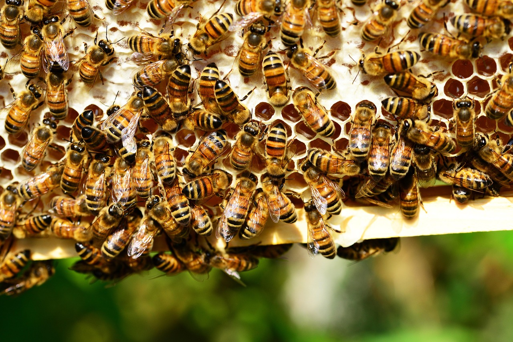
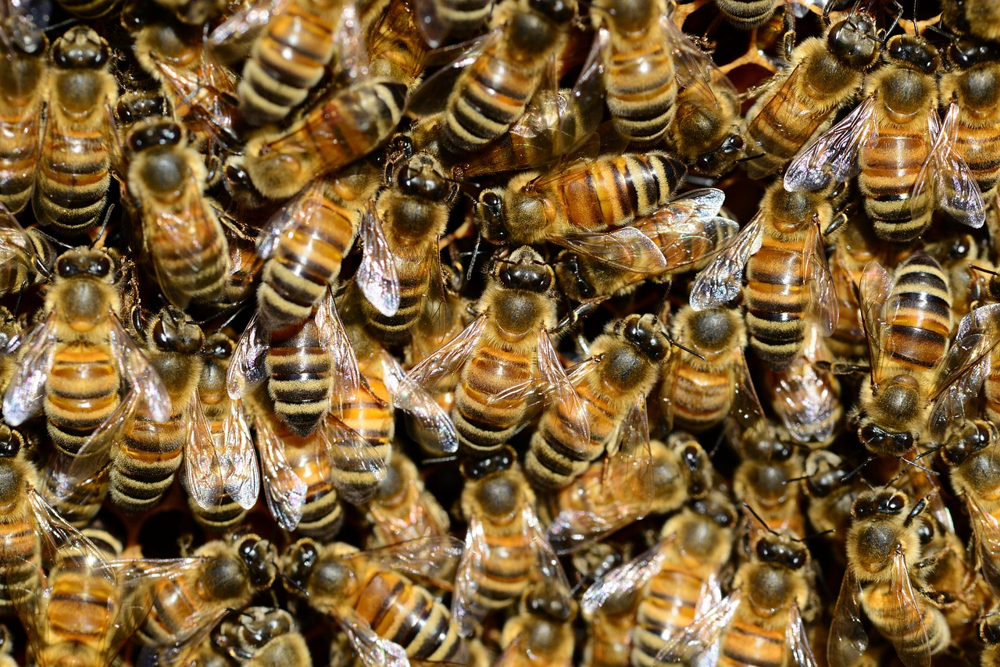
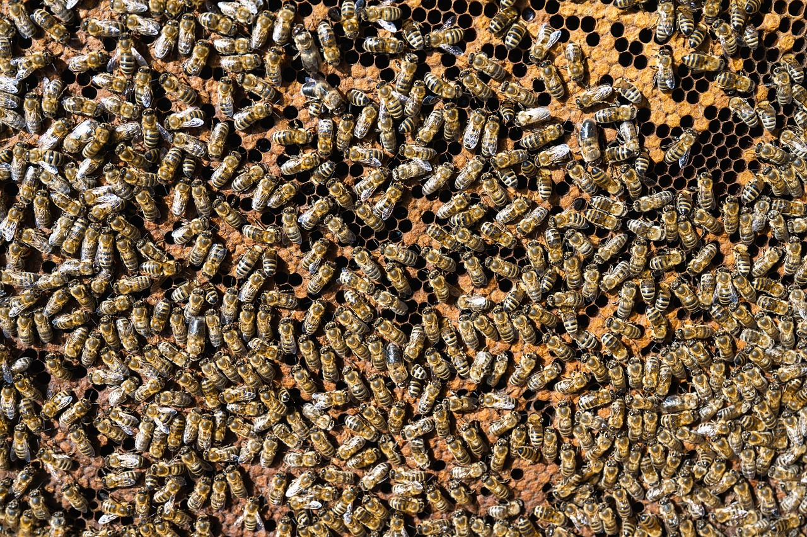
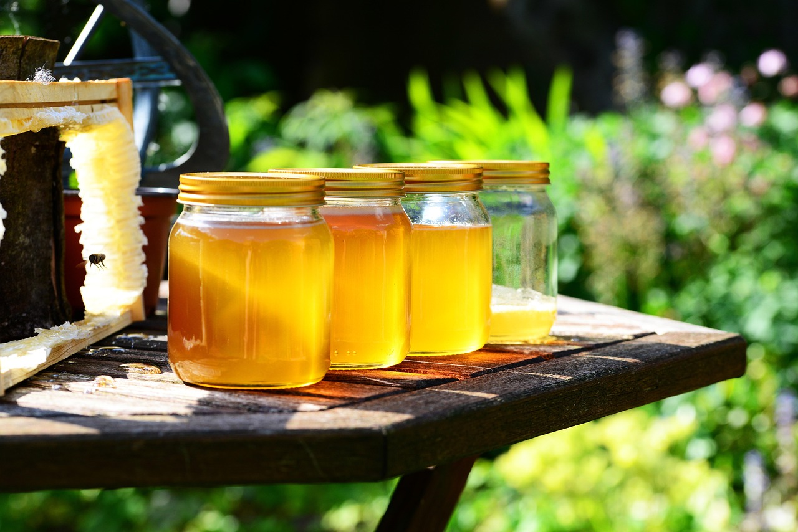

Field issue 01 · The inhabited box
The hive is not still. It changes its meaning with the season.
A wooden hive can look quiet from several steps away. Move closer and it becomes a threshold, weather station, nursery wall, traffic corridor, and archive of collective work. This journal follows what the supplied photographs allow us to see: bees gathering, flying at an entrance, covering comb, and occupying the repeating geometry of wax. The aim is careful looking rather than instruction—a year read through surfaces, density, light, and movement.
01 / Spring · Approach
A colony appears before the box does
A hanging mass among evergreen branches turns thousands of bodies into one visible form. The photograph holds a moment of concentration: wings, legs, and striped abdomens gather into a weight that seems suspended between tree and air. It is an image of proximity rather than a diagram of behavior. What matters editorially is the shift in scale—from a single insect to a collective silhouette.
Read the seasonal observation guide →
02 / Summer · Threshold
At the entrance, still timber meets moving air
The box occupies the left edge while bees cross grass and daylight in many directions. No single flight describes the whole scene. Instead, the entrance becomes legible through repetition: arrivals, departures, brief pauses, and a cloud of changing positions. An observer can watch without pretending that one instant explains the colony.
Learn how to read an entrance →

Photo: PollyDot / Pixabay · License
03 / Autumn · Interior
Wax records differences in tone, depth, and use
Across several comb surfaces, gold shifts toward amber and shadow. Bees interrupt the grid, making the photograph less like a pattern and more like an occupied structure. Open cells and covered areas sit together. Careful viewing begins by naming those visible contrasts without assigning a story to every mark.
Enter the visual anatomy of comb →
04 / Winter · Closeness
A crowded frame rewards a slower gaze
At macro distance, transparent wings overlap, fine hairs catch the light, and stripes stop functioning as a simple symbol. Density can make the image feel motionless, but minute differences remain everywhere. Winter closes this issue with attention drawn inward: not an empty landscape, but a tightly framed study of bodies together.

Four seasonal views
From gathering to threshold, comb, and harvest


Honey colour study
Strip photography: xiSerge, xiSerge, xiSerge, and PollyDot / Pixabay · License